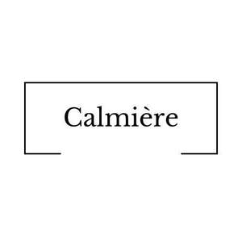

Trade Mark Journal No.2025/009 28 February 2025
UK00004160759 15 February 2025 (14)

- Class 14
- Bracelets; Friendship bracelets; Bracelets [jewelry]; Identification bracelets [jewelry]; Bracelets [jewellery]; Bead bracelets; Bracelets for watches; Ankle bracelets; Bangle bracelets; Bracelet charms; Silver bracelets; Gold bracelets; Bracelets [jewellery, jewelry (Am.)]; Bracelets and watches combined; Watch bracelets; Necklaces; Identification bracelets of precious metal [jewelry]; Charity bracelets; Bracelets [charity]; Silver-plated bracelets; Plastic bracelets in the nature of jewelry; Jewellery rope chain for bracelets; Necklaces [jewelry]; Wooden bead bracelets; Choker necklaces; Necklace charms; Jewellery chain of precious metal for bracelets; Necklaces [jewellery]; Bracelets of precious metal; Charms [jewelry]; Jewelry charms; Charms for jewelry; Bracelets made of embroidered textile [jewelry]; Necklaces [jewellery, jewelry (Am.)]; Gold necklaces; Pendants [jewelry]; Silver necklaces; Bracelets made of rubber or silicone with pattern or message; Charms [jewellery, jewelry (Am.)]; Clasps for jewelry; Jewellery rope chain for necklaces; Amulets [jewelry]; Bracelets made of embroidered textile [jewellery]; Flexible wire bands for wear as a bracelet; Bib necklaces; Brooches [jewelry]; Jewelry brooches; Brooches being jewelry; Gold plated bracelets; Amulets [jewellery, jewelry (Am.)]; Metal expanding watch bracelets; Silver-plated necklaces; Closures for necklaces; Charms [jewellery]; Charms for jewellery; Jewellery charms; Jewellery chain of precious metal for necklaces; Pendants [jewellery]; Jewellery rope chain for anklets; Gold-plated necklaces; Rings [jewellery, jewelry (Am.)]; Brooches [jewellery, jewelry (Am.)]; Charms [jewellery] of common metals; Rings [jewelry]; Pins [jewellery, jewelry (Am.)]; Wristlets [jewellery]; Trinkets [jewellery, jewelry (Am.)]; Necklaces of precious metal; Chains [jewellery, jewelry (Am.)]; Beads for making jewelry; Amber pendants being jewellery; Pendants; Jewellery chain of precious metal for anklets; Lockets [jewelry]; Trinkets [jewelry]; Amulets being jewellery; Amulets [jewellery]; Lockets [jewellery, jewelry (Am.)]; Friendship rings; Clasps for jewellery; Jewelry clips for adapting pierced earrings to clip-on earrings; Pins being jewelry; Pins [jewelry]; Medallions [jewellery, jewelry (Am.)]; Pearls [jewellery, jewelry (Am.)]; Jewellery in the form of beads; Bangles; Ornaments [jewellery, jewelry (Am.)]; Jewelry; Pendants for watch chains; Wrist straps for watches; Straps for wrist watches; Scarf clips being jewelry; Meditation beads; Jewelry charms in precious metals or coated therewith; Amberoid pendants being jewellery; Pearls [jewelry]; Jewelry chains; Chains [jewelry]; Key chains as jewellery [trinkets or fobs]; Crucifixes as jewelry; Ring bands [jewellery]; Wire of precious metal [jewellery, jewelry (Am.)]; Cloisonné jewellery [jewelry (Am.)]; Earrings; Jewellery for personal wear.
Donald Fidler